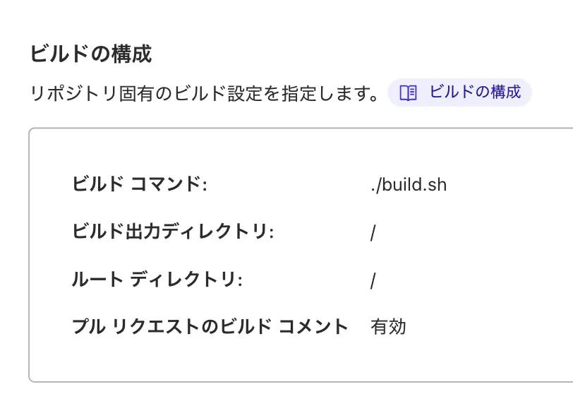
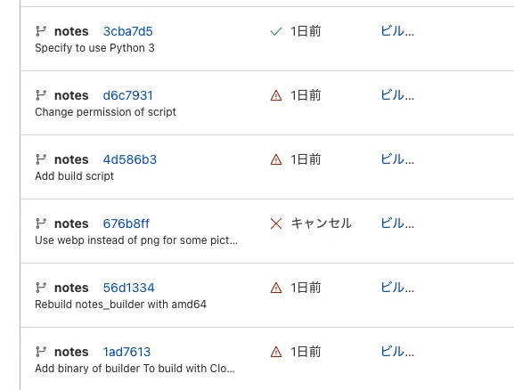

ここのことです。
なんで作ったの
雑な長文投げる場所が欲しかった (つまみログが巨大文章を投下する場所みたいになってしまったので)
仕組み
実はこのページ、Hugoとかみたいに Markdown 書けばOKであとは勝手にスクリプトがHTMLに変換してくれるのです！いちいち長いテンプレはっつけてページ作るのは大変ですからね。それと記事一覧ページも吐いてくれるのでとっても便利！
いや Hugo でいいじゃんとか思ったけどテンプレ作る方法を調べるのがめんどくさかった……(は？) まあ自作ならなんでも機能詰め込めますからね！ガハハ
「Python のスクリプトでmdファイルをHTMLに変換、自作のテンプレHTMLに貼り付ける」というのを Cloudflare Pages にやらせています。

ライブラリのインストールとかもやりたいのでシェルスクリプトも使います。
Cloudflare Pages のデフォルトが Python 2.7 なので無理やり 3.7 を呼び覚まして (本当はもっと良い方法ありそうだけど) Markdown -> HTML の変換をやる Python のプログラムを動かしています。
大変だったとこ
Cloudflare Pages が新しいサービスすぎたのか、あと Python 動かしたいぜ！みたいな変な人がいない (普通はHugoとか使うので) ので3.7で動かす方法を探るのが一番大変でした。うにうに

数多の失敗
あとタグ機能をつけるのがコード書くだけなんだけどなかなかめんどくさくて泣いてしまいました。頑張ったので記事一覧ページで遊んでみてね
今後の展望
- 記事一覧ページにサムネ載っけられるようにしたい
- コードブロックが載らないのをなんとかしたい
おわり